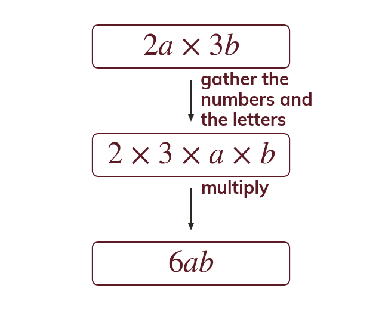

Gathering numbers and letters separately
Multiplication works in any order. Multiply the coefficients, never add them:
Multiplication works in any order, so numbers and letters in a product can be gathered together: The coefficient is the number part of a term, and coefficients multiply together just like ordinary numbers.